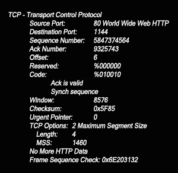

How the Internet
Works
What is the Internet?
"The Internet is a global system of interconnected computer networks that use the standard Internet protocol suite (TCP/IP) to link several billion devices worldwide. It is a network of networks that consists of millions of private, public, academic, business, and government networks of local to global scope, linked by a broad array of electronic, wireless, and optical networking technologies. The Internet carries an extensive range of information resources and services, such as the inter-linked hypertext documents and applications of the World Wide Web (WWW), the infrastructure to support email, and peer-to-peer networks for file sharing and telephony."
-From Wikipedia
The OSI Model: Seven Layers of the Internet
| Layer | Responsibilities | Protocols |
|---|---|---|
| Application |
|
n/a |
| Presentation |
|
n/a |
| Session |
|
n/a |
| Transport |
|
TCP, UDP |
| Network |
|
n/a |
| Data-Link |
|
n/a |
| Physical |
|
n/a |
TCP/IP
Transmission Control Protocol (TCP) takes large pieces of application data and breaks it up into segments, applying sequences of numbers to each segment so that the destination TCP stack knows how to put the data back in order again, as per the intentions of the sending host application. In short, the task of the TCP protocol is to take a data stream sent by an application and prepare it for the Internet Layer. TCP operates on the basis of a connection-oriented virtual circuit. This means that a connection between the sending and destination hosts is established prior to the transmitting of application data. The two sides must first engage in a TCP/IP handshake agreeing to the amount of data to be sent between which exact source/destination ports, among other things.
TCP segment headers are 20 bytes long (can be up to 24 with options), and include fields for:
- Source Port: The port number of the application on the sending host
- Destination Port: The requested port number on the destination host
- Sequence Number: Number used by TCP that either puts data back in correct order upon successful transmission or restransmits damaged or missing data in the event of unsuccessful transmission
- Acknowledgment Number: The next expected TCP octet
- Header Length: The number of 32-bit words in the TCP header indicating where the data begins
- Reserved:Always set to zero
- Code bits/flags: Control mechanisms for setting up and terminating sessions
- Window: Window size, in octets, that sender is willing to accept
- Checksum: Cyclic redundancy check (CRC) of header and data fields to ensure lower OSI layers transported data successfully
- Urgent: If bit is set, this value indicates offset from sequence number where segment of non-urgent data begins
- Options: May be 0 or a multiple of 32 bits
- Data: Handed to the TCP protocol at the Transport layer
The following figure demonstrates the data structure fields of a TCP header:
The following figure shows a syn packet acknowledging that the source port was accepted and destination device has agreed to create a virtual circuit with the originating host:
